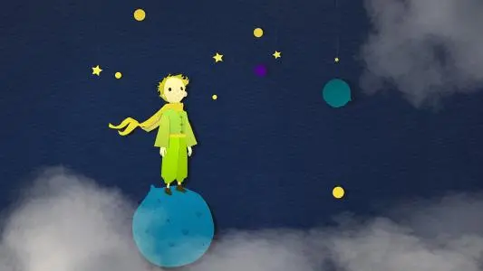

《小王子》所讲述的是美丽的伤感故事，飞行员“我”因为飞机出了故障，被迫降落在远离人烟的撒哈拉沙漠上，这时一位迷人而神秘的小男孩出现了，执拗地请“我”给他画一只绵羊。他就是小王子，纯洁、忧郁，来自太阳系中某个不为人知的小行星，爱提问题，对别人的问题却从不作答。在攀谈中小王子的秘密逐渐揭开了，他是因为与他美丽而骄傲的玫瑰发生了感情纠葛才负气出走的。他在各星球中漫游，分别造访了国王、自负的人、酒鬼、商人、掌灯人和地理学家的星球，最后降临到地球上，试图找到疏解孤独和痛苦的良方，小王子结识了狐狸，同狐狸建立了友谊，也从狐狸那里学到了人生的真谛。他决定回到他的玫瑰那里去，但是他的躯壳是难以带走的，于是他决定求助于那条30秒钟内就能致人于死地的毒蛇……